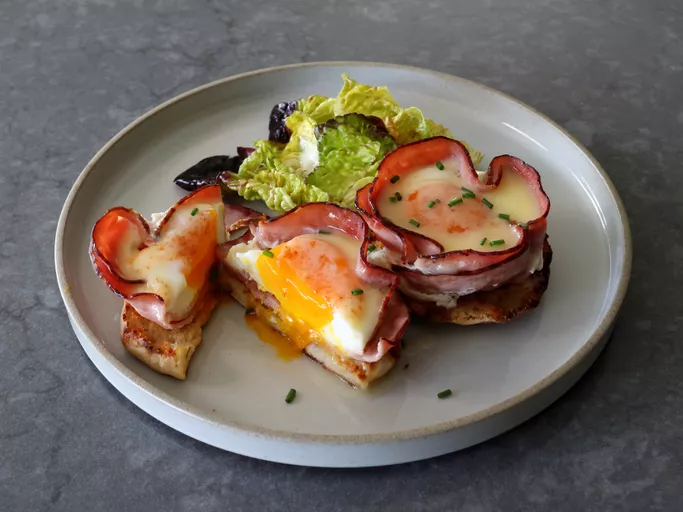

Home
Naked Eggs Benedict

Description
Source
This easy, stripped-down version of eggs benedict involves no poaching, or hollandaise sauce making, which are the top two reasons people don’t make eggs benedict. Even if you master both those elements, and if you’ve seen our videos on them there’s a good chance you have, classic eggs benedict is still not something you make for one, which is why this method is such an exciting breakthrough. Thanks to some baked-in-a-ham-cup eggs, and a simple-to-make lemon butter sauce, the taste is virtually identical to classic eggs Benedict.
One could argue baked eggs can’t compare to perfectly poached ones, so if you want to poach instead, feel free, but the lemon butter sauce here is no compromise. All we’ve done is remove the yolk from a hollandaise, and since we’re serving this over eggs, I don’t think it’s going to be missed. In fact, I believe some, if not most, will find this version preferable, which is why I really do hope you give it a try soon. Enjoy!
Ingredients
Eggs
- 2 teaspoons melted butter
- 4 round or oval slices deli ham (about 2 ounces)
- 2 large eggs
- 1 pinch salt
- 1 pinch cayenne pepper
Lemon Sauce
- 1 lemon, juiced (about 2 tablespoons)
- 1 tablespoon water
- salt to taste
- 2 tablespoons cold unsalted butter, sliced
- 1pinch cayenne pepper or few drops of hot sauce, to taste (optional)
Assemble
- 1 English muffin - halved, toasted, and buttered
- 1 teaspoon freshly snipped chives to garnish
Steps
- Preheat the oven to 350 degrees F (175 degrees C). Grease 2 (5 ounce) ramekins (or 2 wells of a standard muffin tin) with melted butter.
- Line each ramekin with two slices of ham, being sure to get the edges even around the top.
- Crack 1 egg into a small bowl; gently transfer to a ham-lined ramekin; repeat with the second egg. Season each egg with salt and cayenne, to taste.
- Bake in the preheated oven until the whites are just barely set, and the yolks are still soft and a little runny, 20 to 25 minutes. The eggs will continue to cook and set more firmly once removed from the oven if left in the hot ramekins.
- When eggs have 10 minutes cook time remaining, make lemon butter sauce. Add lemon juice, water, and salt to a small pan. Bring to a simmer over medium heat, and simmer until liquid has reduced by about half, 1 to 2 minutes.
- Reduce heat to lowest setting and add butter slices. Start swirling and shaking the pan until butter is almost fully emulsified, then turn off the heat. Continue swirling pan until butter is entirely melted. Taste; add cayenne or hot sauce if using. Keep pan in a warm spot until needed. Sauce will thicken slightly as it cools.
- Toast and butter English muffins, transfer baked ham and eggs onto muffin halves, and spoon warm sauce over. Sprinkle with chives and serve immediately.